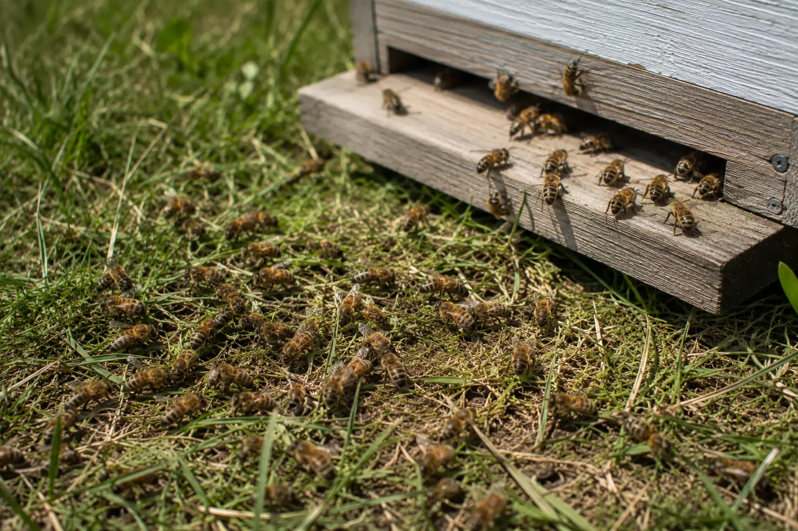
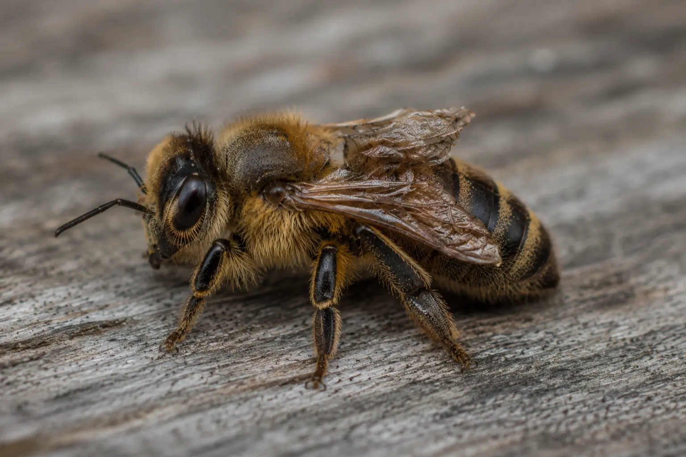

Crawling, dying or poisoned bees
Why Are Bees Crawling on the Ground?
Last updated: 1 May 2026

Bees crawling on the ground near a hive can have several causes. It may be linked to varroa and viruses, pesticide exposure, starvation, chilling, old bees dying naturally, or a colony under stress.
The number of affected bees, how suddenly it appears, whether several colonies are involved, and whether the bees show other symptoms all matter. A few tired or dying bees can be normal. Large numbers of bees crawling, trembling or unable to fly should be checked more carefully.
This page is designed as a practical starting point. It helps you compare the most common causes and decide what evidence to record before taking action.
Quick checks
Start by looking at the scale of the problem. A few bees crawling near the entrance is very different from dozens or hundreds of bees unable to fly. Check whether the problem is limited to one colony or whether several colonies in the apiary are affected.
Watch how the bees move. Trembling, spinning, repeated failed take-off attempts, deformed wings, dragging legs or a sudden pile-up of dead bees all give useful clues. Note the weather, recent spraying nearby, recent treatments, and whether the colony has enough stores.
Take photos or a short video before disturbing the area. This helps if you need advice later.
Common causes of crawling bees
Crawling bees are a symptom rather than a diagnosis. Varroa and viruses, especially deformed wing virus, are common possibilities when bees cannot fly properly. Poisoning is another concern when symptoms appear suddenly, especially across more than one colony.
Starvation and lack of energy can leave bees weak and unable to fly. Chilling can affect bees caught away from the warmth of the cluster in poor weather. Normal ageing also produces some weak or dying bees, but this should not usually create large numbers at once.
Varroa and deformed wing virus

If crawling bees have damaged, shortened or deformed wings, varroa and associated viruses should be high on your list of checks. Deformed wing virus is often linked with varroa pressure and can leave bees unable to fly properly.
Check the wider colony condition. Look at brood pattern, adult bee strength, recent mite monitoring, treatment history and whether other signs of varroa are present. Crawling bees with deformed wings are rarely something to ignore.
Read more: Varroa symptoms in bees and Deformed wing virus.
Pesticide or chemical exposure
If many bees suddenly appear weak, trembling, spinning, crawling or dying outside the hive, pesticide exposure is one possible cause. This is more concerning if several colonies are affected at the same time or if nearby spraying, crop treatment or chemical use has taken place.
Do not jump straight to accusations. Record what you can see, take photos, note the date, time, weather and location, and check whether other colonies are affected. If poisoning is suspected, seek advice before clearing away evidence.
Read more: Pesticide poisoning in bees.
Starvation or lack of energy
Weak bees may crawl because they are short of energy. This can happen when stores are low, during poor weather, after a nectar gap, in late winter or early spring, or in small colonies that are struggling to maintain themselves.
Check whether the hive feels light, whether there are stores close to the cluster, and whether the colony is strong enough to access food. If bees are dead with heads in cells, starvation becomes more likely.
Read more: Signs of starvation in bees.
Chilling or bad weather
Bees caught out in cold, wet or windy conditions may be unable to fly properly. You may see them crawling on grass in front of the hive, moving slowly, or failing to take off after poor weather.
Chilling is more likely during unsettled weather, early spring, late autumn, or where bees have been forced away from the cluster. It can also affect weak colonies that do not have enough bees to keep brood and the nest area warm.
Normal losses
A small number of dead or dying bees can be normal. Worker bees age, wear out and die, and you may occasionally see weak individuals crawling near the hive entrance.
Normal losses are usually low-level and not sudden. If the number of affected bees increases, the colony is weakening, or other symptoms appear, treat it as a possible health problem rather than routine bee loss.
When crawling bees are more serious
Crawling bees are more serious when there are large numbers of affected bees, the problem appears suddenly, several colonies are affected at once, or the bees show obvious virus signs such as deformed wings.
It is also more concerning if the colony is weakening quickly, if there are dead bees inside the hive or at the entrance, or if the pattern follows nearby spraying or chemical use.
In these cases, record evidence and use a structured check rather than guessing from one sign.
What to do next
Take photos or video of the affected bees. Record the date, time, weather, colony affected and whether other colonies show similar symptoms. This creates a useful timeline if the issue continues or advice is needed.
Check stores and colony strength. Review recent varroa monitoring and treatment history. Look for deformed wings, trembling, spinning, dead bees at the entrance, low food, weak brood pattern or signs of poisoning.
Use the Bee Health Checker to narrow down the likely cause, then follow the relevant guide for varroa, poisoning, starvation or dead bees outside the hive.
What not to do
Do not assume crawling bees always mean poisoning. Poisoning is possible, but varroa, viruses, starvation, chilling and weakness can all cause similar signs.
Do not ignore possible varroa or virus pressure, especially if you see deformed wings. Do not move frames or equipment between colonies if disease is suspected, and do not delay checking stores if the colony looks weak.
Avoid clearing away all evidence before taking photos if the incident is sudden or severe.
How HiveTag can help
HiveTag can help you record unusual behaviour with notes, photos, weather, affected colony, stores, varroa history and follow-up actions. This makes it easier to compare the event with earlier inspections and spot whether the colony was already weakening.
A clear record is especially useful where several causes overlap, such as a weak colony with low stores and a recent varroa concern.
Learn more: HiveTag.
Crawling Bees FAQ
No. Deformed wing virus is one possible cause, especially where bees have damaged or shortened wings, but crawling can also be linked to poisoning, starvation, chilling, weakness or old bees dying naturally.
A few weak or dying bees can be normal. Large numbers, sudden onset, visible deformities or several colonies affected at once should be taken more seriously.
Yes. Bees caught away from the warmth of the cluster in cold, wet or windy weather may become chilled and unable to fly properly.
If you suspect poisoning, serious disease, sudden unexplained losses, or a notifiable disease, contact your local bee inspector or the National Bee Unit for advice.